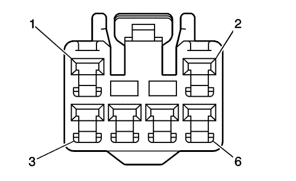
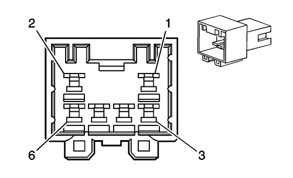

Spark |
||||||||
|
|
|
|||||||
|
 |
 |
Información sobre la pieza de conexión
| Información sobre la pieza de conexión
|
Información sobre la pieza de terminal
| Información sobre la pieza de terminal
|
Bulón | Cable | Circuito | Función | Bulón | Cable | Circuito | Función |
|---|---|---|---|---|---|---|---|
1 | 0,5 BK | 850 | Toma de tierra | 1 | 0,5 BK | 850 | Toma de tierra |
2 | 0,5 BK | 850 | Toma de tierra | 2 | 0,5 BK | 850 | Toma de tierra |
3 | 0,5 RD | 20 | Tensión de alimentación de las luces de freno | 3 | 0,5 BN/YE | 20 | Tensión de alimentación de las luces de freno |
0,5 BN/YE | 20 | Tensión de alimentación de las luces de freno | |||||
4 | 0,5 BN/L-BU | 2509 | Tensión de alimentación de la luz de estacionamiento trasera izquierda | 4 | 0,5 BN/L-BU | 2509 | Tensión de alimentación de las luces de matrícula |
0,5 BN/L-BU | 2509 | Tensión de alimentación de las luces de matrícula | |||||
5 | 0,5 L-BU/WH | 14 | Tensión de alimentación del intermitente izquierdo (sin CW1) | 5 | 0,5 L-BU/WH | 14 | Tensión de alimentación del intermitente izquierdo (sin CW1) |
6 | 0,5/WH | 24 | Tensión de alimentación de la lámpara de respaldo (sin T79) | 6 | 0,5 L-GN/WH | 24 | Tensión de alimentación de la lámpara de respaldo (sin T79) |
0,5 L-GN/WH | 24 | Tensión de alimentación de la lámpara de respaldo (sin T79) | |||||
0,5 YE/GY | 122 | Tensión de alimentación de la luz antiniebla trasera (T79) | 0,5 YE/GY | 122 | Tensión de alimentación de la luz antiniebla trasera (T79) |
| © Copyright Chevrolet Europe. All rights reserved |